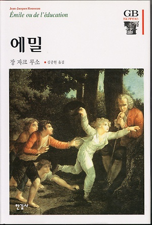
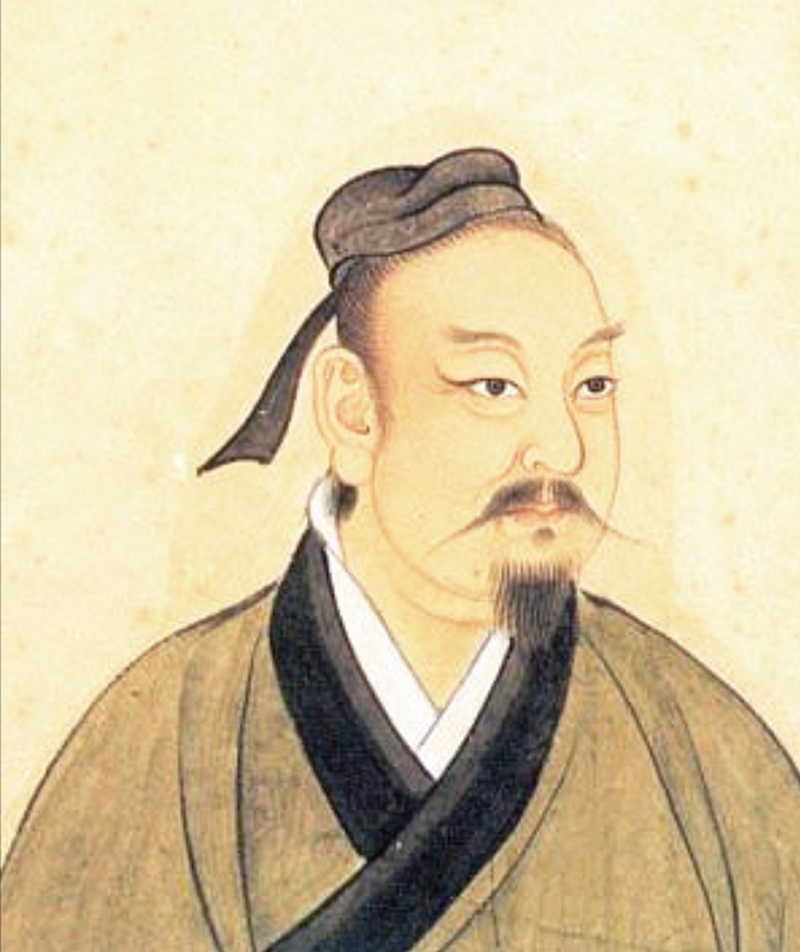
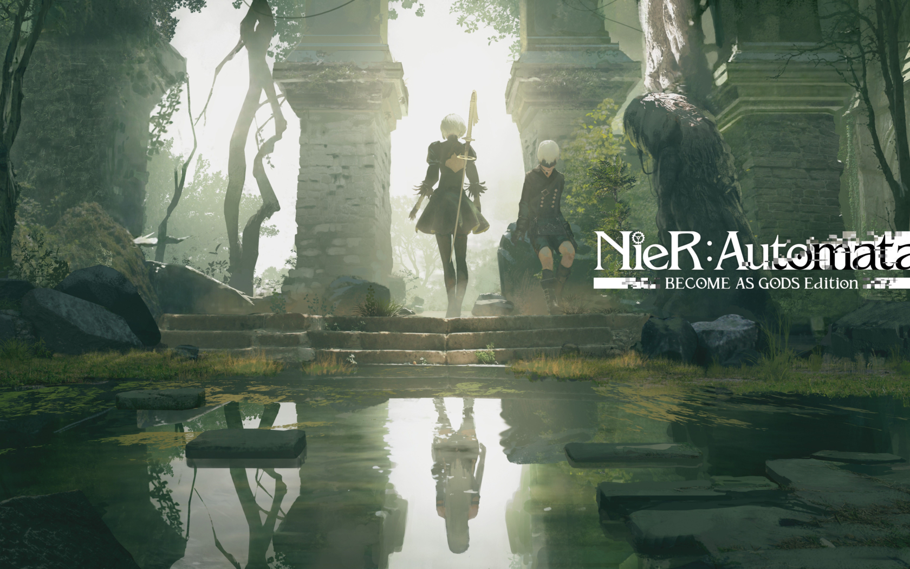
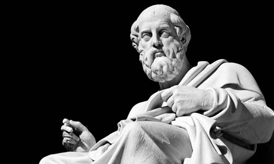
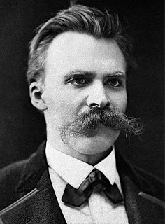
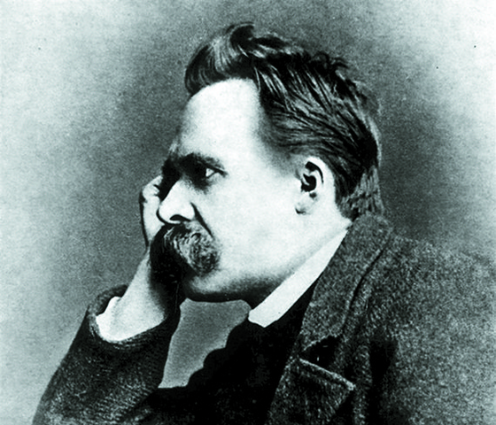
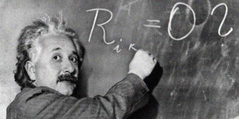

세상 만물은 각자의 존재 이유가 있는 법.
나는 무엇이며 어디로부터 오고 어디로 향해 가는가?
인류는 그 답을 찾아 내기 위해 수 세기 동안 고민하고 사고했습니다.
전 자신의 존재 이유를 생각해 볼 수 있는 존재는 단연코 인간밖에 없다고 생각합니다.
이 별에서 제가 인간의 내면에 대해 고찰하고, 삶에 태도에 대해서 고민한 흔적이 보였으면 좋겠습니다.
"다윗의 아들 예루살렘 왕 전도자의 말씀이라
전도자가 이르되 헛되고 헛되며 헛되고 헛되니 모든 것이 헛되도다"
[전도서 1장 1-2절]
"자신의 존재를 찾기 위한 여정을 멈추지 말라"
[김은호]

"Tout est bien sortant des mains de l'Auteur des choses, tout dégénère entre les mains de l'homme.
조물주가 창조한 모든 것은 선하나, 인간의 손 안에서 모든 것은 타락한다."
[Émile ou De l'éducation, 에밀 - 장자크 루소]

"不知周之夢為蝴蝶與，蝴蝶之夢為周與？
알지 못하겠다. 장자가 꿈에 나비가 된 것인가, 나비가 꿈에 장자가 된 것인가?"
[장자]
"恥の多い生涯を送って来ました。自分には、人間の生活というものが、見当つかないのです。
부끄러움 많은 생애를 보냈습니다. 저는 인간의 삶이라는 것을 도무지 이해할 수 없습니다."
[人間失格 인간실격]-다자이 오사무

"모든 존재들은 사라지도록 설계되어 있다.
생과 사를 되풀이 하는 나선에... 그들은 얽메여 있다.
하지만... 그 윤회 안에서 발버둥 치는 것이 살아 있다는 의미인 것이다."
[NieR: Automata]-2B
"나는 먼 미래에는 훨씬 더 중요한 연구 분야가 열리리라고 본다.
인간의 기원과 역사에 빛이 빛추어질 것이다.
정해진 중력의 법칙을 따라 이 행성이 끝없이 회전하는 동안,
아주 단순한 시작으로부터 너무나 아름답고 너무나 경이로운 무한한 생물종들이
진화해 왔고,
진화하고 있고,
진화해 갈 것이다.
이러한 생명관에는 장엄함이 깃들어 있다."
[종의 기원]-찰스 다윈

"인간에게 있어 가장 아름다운 진실은 마음가짐을 바꾸면 현실을 바꿀 수 있다는 점이다"
[플라톤]

존재를 최대한 풍요롭게 실천하고 최대한 만끽하기 위한 비결은 바로 이것이다.
위험하게 살아라! 베수비오 화산의 비탈에 너의 도시를 세워라!
[즐거운 학문 283절] 프리드리히 니체

""신은 어디에 있지?" 그는 부르짖었다.
"내가 가르쳐주리라.
우리가 신을 죽여버렸다—너희와 내가!
우리 모두는 신을 죽인 자들이다!
(중략)
Gott ist tot
신은 죽었다.
신은 죽어 있다.
그리고 우리가 그를 죽여버렸다.
살인자 중의 살인자인 우리는 어떻게 스스로를 위로할 것인가?"
[차라투스트라는 이렇게 말했다]-프리드리히 니체

"(전략) 하지만 삶의 일상생활에서 예정되어 있던 순서가 방해받았을 때,
우리는 망망대해에서 어디서 왔는지도 잊어버리고,
또 어디로 흘러가는지도 모른 채 초라한 널빤지에 올라탄 조난자들처럼 됩니다.
하지만 우리가 이걸 완전히 받아들이는 순간, 삶은 보다 쉬워지고 더 이상 실망할 게 없습니다."
[1930년 2월 5일 아들에게 보낸 편지에서]-알베르트 아인슈타인
...
인간은 무엇을 위해서 존재하는 것일까요?
그 해답은 성경에 있다고들 합니다.
부끄럽지만 저는 선교사 자녀로 자라왔음에도 불구하고 많은 세상적인 책들을 읽고 자랐습니다.
아직 저는 제 자신의 존재 의의에 대해서 아직도 정답을 얻진 못했습니다.
성경에서도, 혹은 세상 소위 위인들의 말을 들어도 명쾌한 해답은 없는 것 같습니다.
하지만 이런 존재를 위한 생각과 고민한다는 그 자체만으로도 의미가 있다고 생각합니다.
실존은 본질에 앞설까요? 아님 인간에겐 중요한 본질이 있는 것일까요?